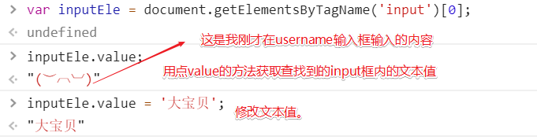

原文连接:https://www.cnblogs.com/suguangti/p/10960297.html
摘要：
-
window对象
-
BOM（Browser Object Model）
-
DOM （Document Object Model）
0、引子：
JavaScript分为三部分：ECMAScript、DOM、BOM
BOM（Browser Object Model）是指浏览器对象模型，它使 JavaScript 有能力与浏览器进行“对话”。
DOM （Document Object Model）是指文档对象模型，通过它，可以访问HTML文档的所有元素。
window对象是对客户端JavaScript最高层对象之一，由于window对象是其他大部分对象共同的祖先，在调用window对象的方法和属性时，可以省略window的引用，例如：window.document.write()可以简写成：document.write()。
1、window对象
所有浏览器都支持window对象，它表示浏览器窗口。
所有 JavaScript 全局对象、函数以及变量均自动成为 window 对象的成员。
全局变量是 window 对象的属性。全局函数是 window 对象的方法。
接下来要讲的HTML DOM 的 document 也是 window 对象的属性之一。
一些常用的Window方法：
- window.innerHeight - 浏览器窗口的内部高度
- window.innerWidth - 浏览器窗口的内部宽度
- window.open() - 打开新窗口
- window.close() - 关闭当前窗口
1、window的子对象
#navigator对象（浏览器对象，通过这个对象可以判定用户所使用的浏览器，包含了浏览器相关信息。）（了解）
navigator.appName // Web浏览器全称
navigator.appVersion // Web浏览器厂商和版本的详细字符串
navigator.userAgent // 客户端绝大部分信息
navigator.platform // 浏览器运行所在的操作系统#screen对象（屏幕对象）（了解）
屏幕对象，不常用。
一些属性：
- screen.availWidth - 可用的屏幕宽度
- screen.availHeight - 可用的屏幕高度
#history对象（了解）
window.history 对象包含浏览器的历史。
浏览历史对象，包含了用户对当前页面的浏览历史，但我们无法查看具体的地址，可以简单的用来前进或后退一个页面。
history.forward() // 前进一页
history.back() // 后退一页2、BOM(Browser Object Model)
#弹出框：
可以在 JavaScript 中创建三种消息框：警告框、确认框、提示框。
警告框
警告框经常用于确保用户可以得到某些信息。
当警告框出现后，用户需要点击确定按钮才能继续进行操作。
alert("你看到了吗？");确认框（了解即可）
确认框用于使用户可以验证或者接受某些信息。
当确认框出现后，用户需要点击确定或者取消按钮才能继续进行操作。
如果用户点击确认，那么返回值为 true。如果用户点击取消，那么返回值为 false。
confirm("你确定吗？")提示框（了解即可）
提示框经常用于提示用户在进入页面前输入某个值。
当提示框出现后，用户需要输入某个值，然后点击确认或取消按钮才能继续操纵。
如果用户点击确认，那么返回值为输入的值。如果用户点击取消，那么返回值为 null。
prompt("请在下方输入","你的答案")#计时相关：
通过使用 JavaScript，我们可以在一定时间间隔之后来执行代码，而不是在函数被调用后立即执行。我们称之为计时事件。
setTimeout()
var t=setTimeout("JS语句",毫秒)setTimeout() 方法会返回某个值。在上面的语句中，值被储存在名为 t 的变量中。假如你希望取消这个 setTimeout()，你可以使用这个变量名来指定它。
setTimeout() 的第一个参数是含有 JavaScript 语句的字符串。这个语句可能诸如 "alert('5 seconds!')"，或者对函数的调用，诸如 alertMsg()"。
第二个参数指示从当前起多少毫秒后执行第一个参数（1000 毫秒等于一秒）。
clearTimeout()
clearTimeout(setTimeout_variable)示例：
// 在指定时间之后执行一次相应函数
var timer = setTimeout(function(){alert(123);}, 3000)
// 取消setTimeout设置
clearTimeout(timer);setInterval()
setInterval() 方法可按照指定的周期（以毫秒计）来调用函数或计算表达式。
setInterval() 方法会不停地调用函数，直到 clearInterval() 被调用或窗口被关闭。由 setInterval() 返回的 ID 值可用作 clearInterval() 方法的参数。
setInterval("JS语句",时间间隔)返回值
一个可以传递给 Window.clearInterval() 从而取消对 code 的周期性执行的值。
clearInterval()
clearInterval() 方法可取消由 setInterval() 设置的 timeout。
clearInterval() 方法的参数必须是由 setInterval() 返回的 ID 值。
clearInterval(setinterval返回的ID值)示例：
// 每隔一段时间就执行一次相应函数
var timer = setInterval(function(){console.log(123);}, 3000)
// 取消setInterval设置
clearInterval(timer);3、DOM(Document Object Model)
1、HTML DOM 树
DOM（Document Object Model）是一套对文档的内容进行抽象和概念化的方法。
当网页被加载时，浏览器会创建页面的文档对象模型（Document Object Model）。
HTML DOM 模型被构造为对象的树。
#HTML DOM树

DOM标准规定HTML文档中的每个成分都是一个节点(node)：
- 文档节点(document对象)：代表整个文档
- 元素节点(element 对象)：代表一个元素（标签）
- 文本节点(text对象)：代表元素（标签）中的文本
- 属性节点(attribute对象)：代表一个属性，元素（标签）才有属性
- 注释是注释节点(comment对象)
JavaScript 可以通过DOM创建动态的 HTML：
- JavaScript 能够改变页面中的所有 HTML 元素
- JavaScript 能够改变页面中的所有 HTML 属性
- JavaScript 能够改变页面中的所有 CSS 样式
- JavaScript 能够对页面中的所有事件做出反应
2、查找标签
- 直接查找
document.getElementById //根据ID获取一个标签 document.getElementsByClassName //根据class属性获取标签合集 document.getElementsByTagName //根据标签名获取标签合集 
- 间接查找
parentElement //父节点标签元素 children //所有子标签 firstElementChild //第一个子标签元素 lastElementChild //最后一个子标签元素 nextElementSibling //下一个兄弟标签元素 previousElementSibling //上一个兄弟标签元素
三、节点操作：
- 创建节点：
语法：createElement(标签名)
- 添加节点：
语法：追加一个子节点（作为最后的子节点）
somenode.appendChild(newnode);
把增加的节点放在某个节点的前面。
somenode.insertBefore(newnode,某个节点); - 删除节点：
语法：获取要删除的元素，通过父元素调用该方法删除
somenode.removeChild(要删除的节点） - 替换节点
语法：somenode.replaceChild(newnode,某个节点); -
- 属性节点：
#获取文本节点的值：var divEle = document.getElementById('d1'); divEle.innerText; divEle.innerHTML;#设置文本节点的值：
var divEle = document.getElementById("d1") divEle.innerText="1" divEle.innerHTML="<p>2</p>"attribute操作
var divEle = document.getElementById("d1"); divEle.setAttribute("age","18") divEle.getAttribute("age") divEle.removeAttribute("age") // 自带的属性还可以直接.属性名来获取和设置 imgEle.src imgEle.src="..." -
获取值操作：
语法：elementNode.value
使用以下标签：input、select、textarea -
<!DOCTYPE html> <html lang="en"> <head> <meta charset="UTF-8"> <title>Title</title> <script src="jQuery-3.4.1.js"></script> </head> <body> <form action=""> <p>username: <input type="text"></p> <p>password: <input type="password"></p> <p><select name="" id=""> <option value="">湖北省</option> <option value="">内蒙古</option> <option value="">上海</option> </select></p> </form> </body> </html> -
 - class的操作：
className 获取所有样式类名（字符串） classList.remove(cls) 删除制定类 classList.add(cls) 添加类 classList.contains(cls) 判断是否包含这个类，存在返回true，不存在返回false classList.toggle(cls) 有就删除，否则添加。 -
指定CSS操作
obj.style.backgroundColor="red"JS操作CSS属性的规律：
-
1.对于没有中横线的CSS属性一般直接使用style.属性名即可。如：
obj.style.margin obj.style.width obj.style.left obj.style.position - 利用删除、增加标签里的内来来控制样式变化：
-
2.对含有中横线的CSS属性，将中横线后面的第一个字母换成大写即可。如：
obj.style.marginTop obj.style.borderLeftWidth obj.style.zIndex obj.style.fontFamily
三、事件
事件，顾名思义，比如当用户点击某个HTML元素时候启动一段javascript代码，用来触发某一个功能的过程。
常用事件
-
onclick 当用户点击某个对象时调用的事件句柄。 ondblclick 当用户双击某个对象时调用的事件句柄。 onfocus 元素获得焦点。 // 练习：输入框 onblur 元素失去焦点。 应用场景：用于表单验证,用户离开某个输入框时,代表已经输入完了,我们可以对它进行验证. onchange 域的内容被改变。 应用场景：通常用于表单元素,当元素内容被改变时触发.（select联动） onkeydown 某个键盘按键被按下。 应用场景: 当用户在最后一个输入框按下回车按键时,表单提交. onkeypress 某个键盘按键被按下并松开。 onkeyup 某个键盘按键被松开。 onload 一张页面或一幅图像完成加载。 onmousedown 鼠标按钮被按下。 onmousemove 鼠标被移动。 onmouseout 鼠标从某元素移开。 onmouseover 鼠标移到某元素之上。 onselect 在文本框中的文本被选中时发生。 onsubmit 确认按钮被点击，使用的对象是form。一些经常用到的事件示例：
- onclick（鼠标点击事件）：
<!DOCTYPE html> <html lang="en"> <head> <meta charset="UTF-8"> <title>Title</title> <style> .c1 { width: 400px; height: 400px; border-radius: 50%; border: 3px solid black; } .bg_red { background-color: red; } .bg_green { background-color: green; } </style> </head> <body> <div class="c1 bg_red bg_green"></div> <button id="bbb">点我变色</button> <script> var bbbEle = document.getElementById('bbb') bbbEle.onclick = function () { let dELe = document.getElementsByClassName('c1')[0]; dELe.classList.toggle('bg_green') } </script> </body> </html> - onfocus (获取焦点事件）
<!DOCTYPE html> <html lang="en"> <head> <meta charset="UTF-8"> <title>Title</title> </head> <body> <form action=""> <input type="text" value="华为p30" id="tex"> <button>搜索</button> </form> <script> let texEle = document.getElementById('tex'); var original_text = texEle.value; texEle.onfocus = function () { texEle.value = ''; }; texEle.onblur = function () { texEle.value = original_text; }; </script> </body> </html>
- 利用onclick 和 setInterval和 clearInterval 实现时间动态显示和暂停操作
<!DOCTYPE html> <html lang="en"> <head> <meta charset="UTF-8"> <title>Title</title> </head> <body> <label for="cur_time"></label> <input type="text" id="cur_time"> <button id="show_time">当前时间</button> <button id="time_stop">时间暂停</button> <script> // 查找到标签对象 var curEle = document.getElementById('cur_time'); var shEle = document.getElementById('show_time'); var stopEle = document.getElementById('time_stop'); var flag; // 获取当前时间动作+文本框显示时间 var getTime = function () { var curTime = new Date(); // 将当前时间添加到输入文本框中 curEle.value = curTime.toLocaleString() }; // 创建点击事件，点击‘当前时间’按钮，获取当前时间，文本框显示 // 当前时间，这里加入了定时功能，没过1s，当前时间重复显示以实现 // 时间动态显示效果 shEle.onclick = function () { // 这里做一层判断，如果获取时间+定时重复已设置，则无需重复 // 主要防止先暂停清除setInterval时候会有多余的setInterval在 // 内存中执行。 if (!flag){flag = setInterval(getTime,1000)} }; // 清除setInterval，实现暂停效果 stopEle.onclick = function () { clearInterval(flag); // 将定时器变量手动置空 flag = null; }; </script> </body> </html> - 省市联动
<!DOCTYPE html> <html lang="en"> <head> <meta charset="UTF-8"> <title>Title</title> </head> <body> <!--<label for="s1"></label>--> <!--<label for="s2"></label>--> <select id="s1"> <option value="">请选择省</option> </select> <select id="s2"> <option value="">请选择市</option> </select> <script> var data = {"湖北省": ["武汉", "鄂州", "黄冈"], "北京": ["朝阳区", "海淀区"]}; var s1Ele = document.getElementById('s1'); var s2Ele = document.getElementById('s2'); //for循环遍历每个省份 for (let p in data){ //创建一个标签对象 let proEle = document.createElement('option'); proEle.innerText = p; //将得到的省份存入option标签对象文本中 s1Ele.appendChild(proEle); //将标签对象添加到select id为s1的便签中 } s1Ele.onchange = function () { s2Ele.innerHTML = ''; let choice_p = s1Ele.value; let cityList = data[choice_p]; for (let i=0;i<cityList.length;i++){ let cityEle = document.createElement('option'); cityEle.innerText = cityList[i]; s2Ele.appendChild(cityEle); } } </script> </body> </html>